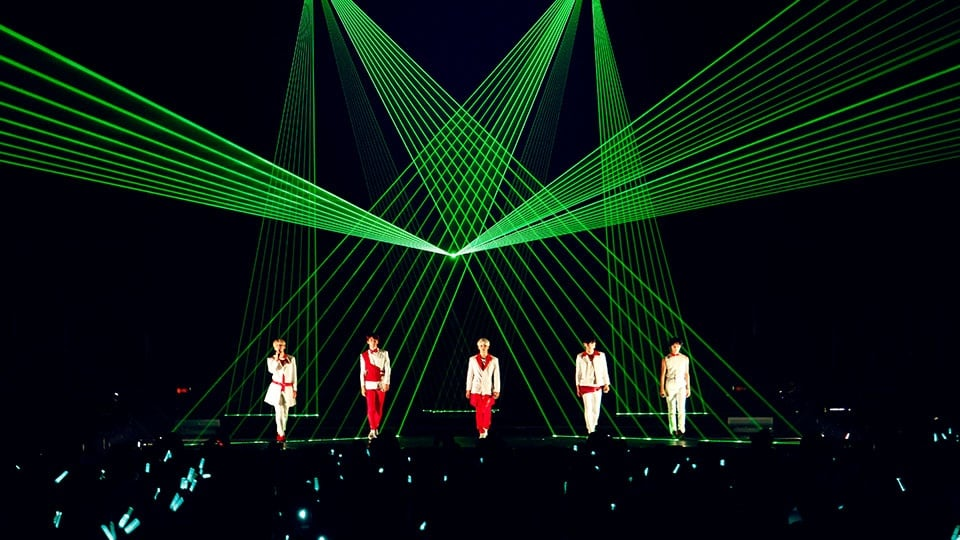
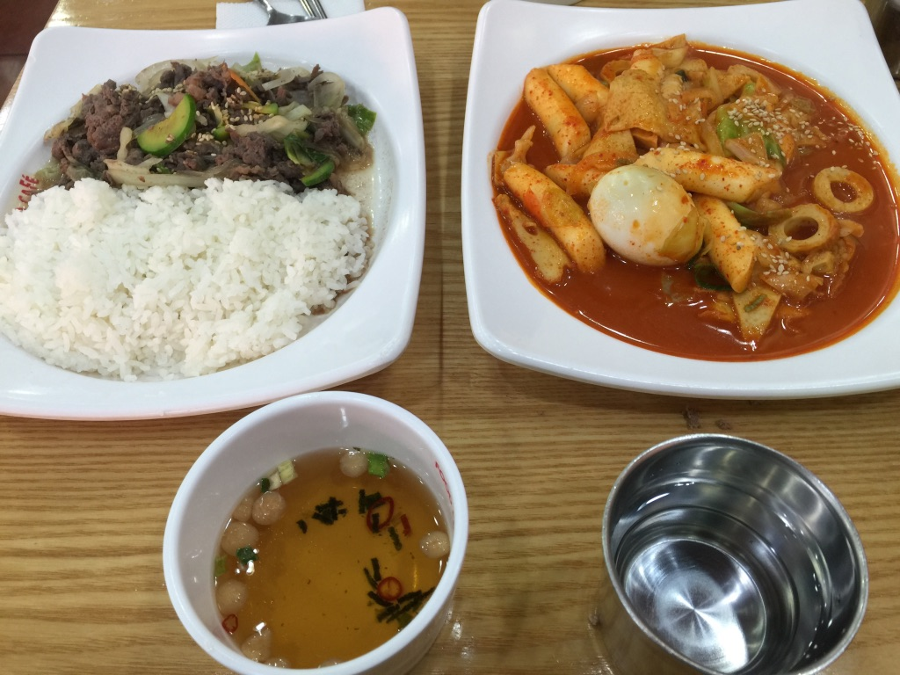
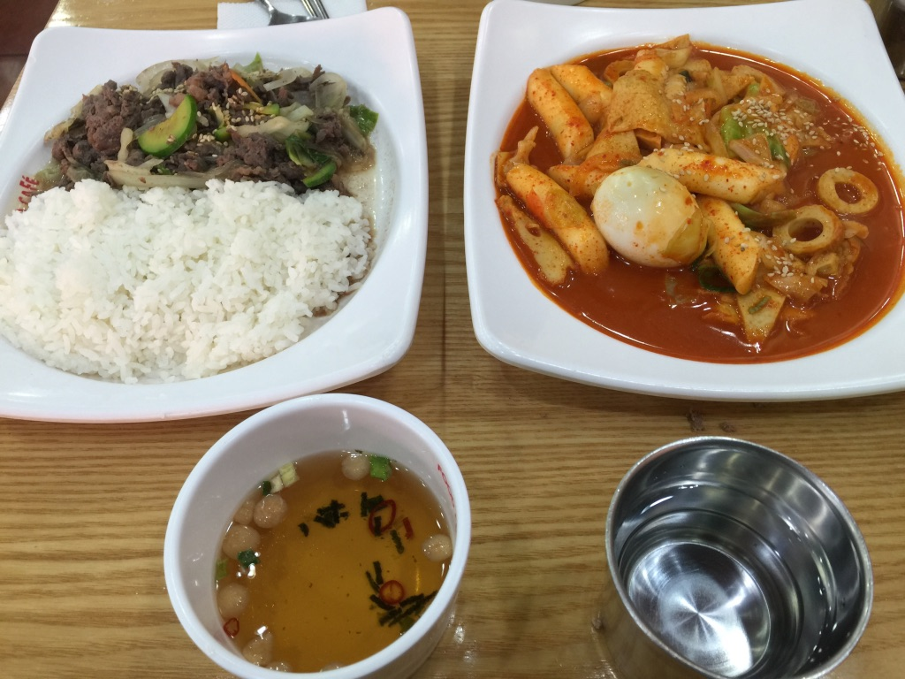

SHINee World 2013 ~BOYS MEET U~


My very first time seeing SHINee in real life was in Christmas of 2013. I'd traveled to Japan
with my mother and aunt. In addition to attending the concert, we also visited other cities like Kyoto,
Hiroshima, and Miyajima. I visited many famous landmarks such as Tokyo Tower, SkyTree, Meiji Shrine, etc.
We then celebrated the new year in South Korea, the very heart of K-pop.


SHINee World 2014 ~I'M YOUR BOY~ Special Edition in Tokyo Dome
When SHINee's first Tokyo Dome concert was announced, I knew there was no possible way I could ever miss it.
Despite having been just 2 months away from my college graduation and in the middle of my senior project, I
hopped right onto the first plane I could and made my way back to Japan. Now to some that might have seemed
a bit extreme, but other k-pop fans will understand what I mean when I say I have absolutely no regrets.
THE AGIT: THE STORY by JONGHYUN
By this point in time, I'd already moved to Tokyo to teach English for the JET Programme. Given that Seoul was
just a short 2 hour trip away, I soon made my way there for Jonghyun's first solo concert. While I was there
I made sure to eat some Korean food as well.
 

In The Heights: Key
Coincidentally, Key had also been cast as Usnavi in the Korean adaptation of Lin-Manuel Miranda's In the
Heights musical while I was there. Getting a ticket for either of these shows was hardly easy given the
demand and language barrier, but I wasn't about to let that stop me!